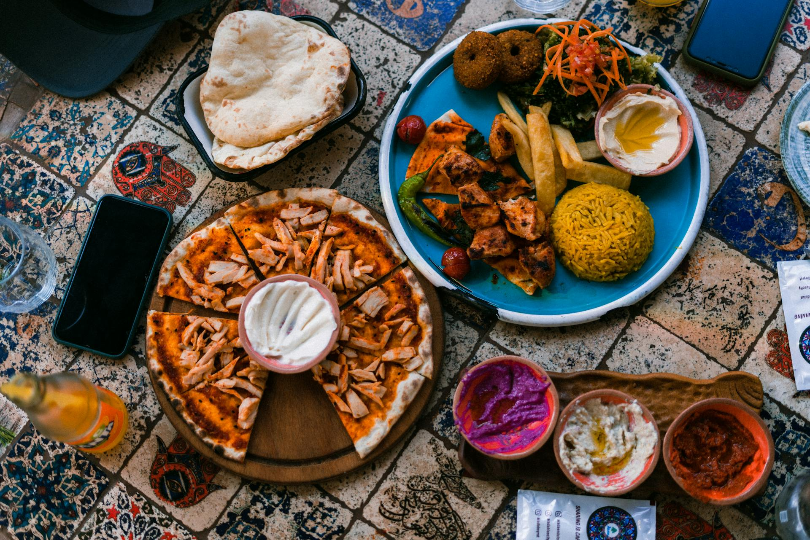
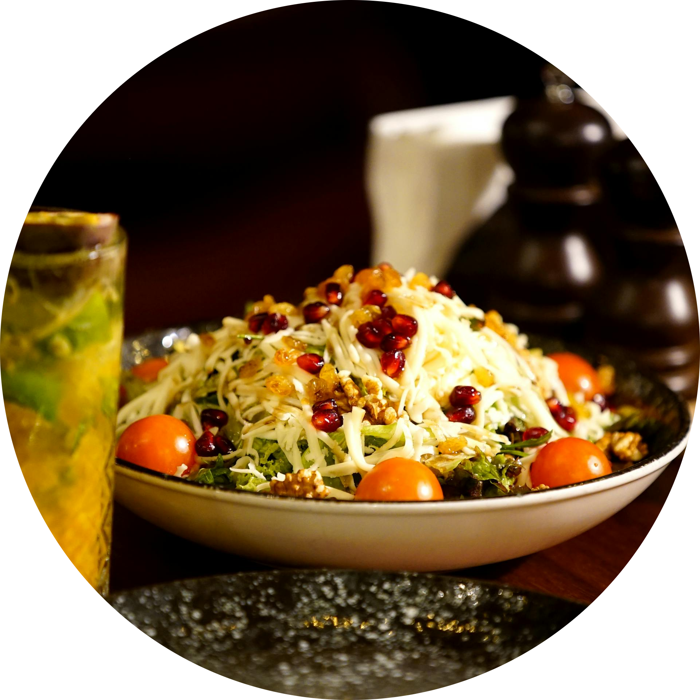
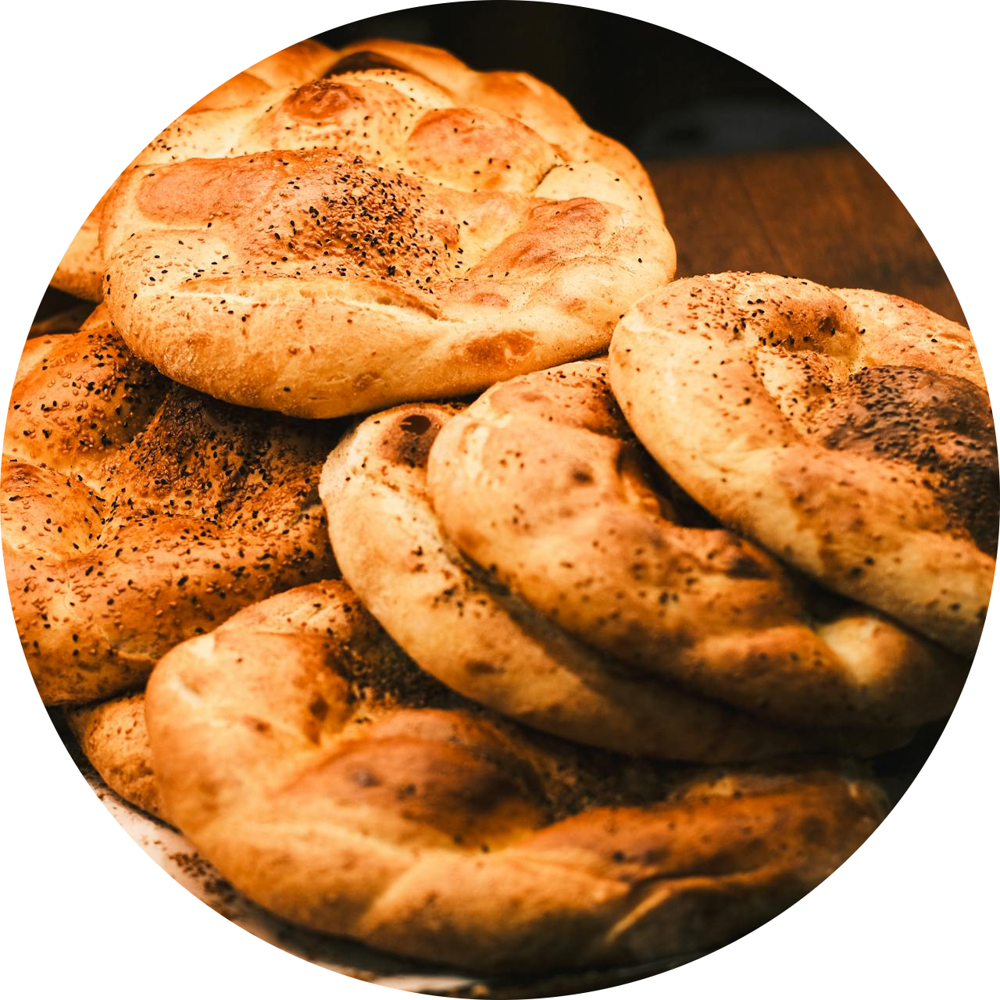
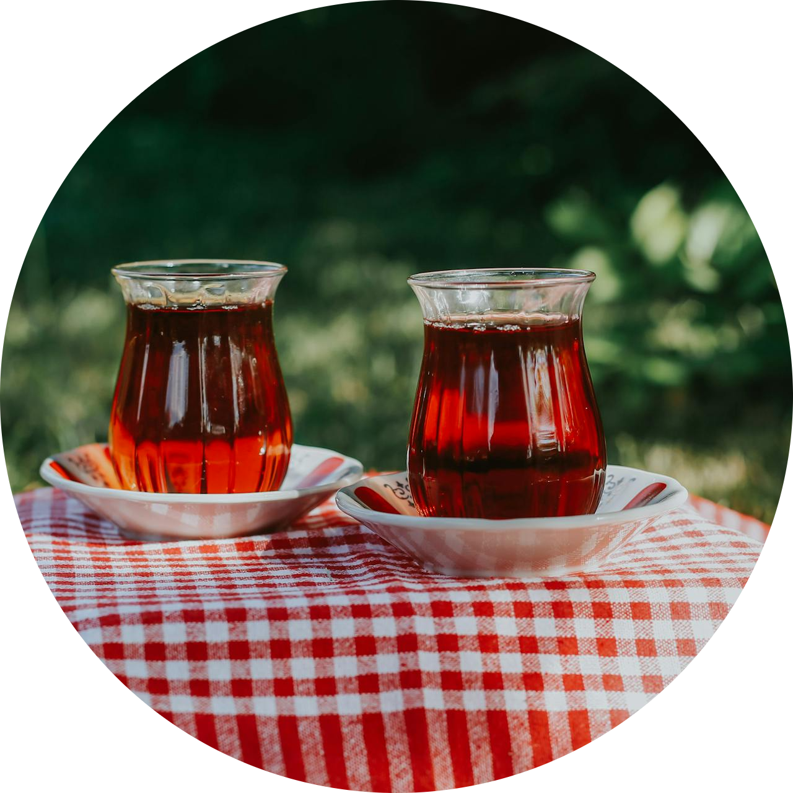

é um prato típico do Egito feito com arroz, macarrão, lentilhas e molho de tomate, muito popular e nutritivo.

é um pão tradicional semelhante ao pão sírio

é uma bebida refrescante feita com flores de hibisco, servida quente ou fria.
O preparo do Eish Baladi mantém técnicas tradicionais que atravessaram milênios, sendo muitas vezes feito em fornos comunitários. Sua textura macia por dentro e levemente crocante por fora o torna ideal para acompanhar diversos pratos ou ser recheado. No Egito moderno, o pão continua sendo um alimento essencial e altamente valorizado, com subsídios governamentais para garantir seu acesso à população. Essa ligação entre pão e vida mostra como a alimentação está profundamente conectada à cultura e à sobrevivência do povo egípcio
Além de sua origem multicultural, o Koshary se tornou um verdadeiro símbolo nacional do Egito, sendo vendido em barracas de rua e restaurantes populares por todo o país. Sua combinação de ingredientes simples cria uma refeição extremamente nutritiva e acessível, muito consumida no dia a dia. O prato também é conhecido por suas camadas bem definidas, que misturam texturas e sabores — do crocante da cebola frita ao molho de tomate temperado. Hoje, ele representa não apenas a culinária egípcia, mas também a mistura de culturas que marcaram a história do país.
O Karkadeh, além de refrescante, é conhecido por seus benefícios à saúde, como ajudar na digestão e na hidratação em climas quentes. Ele pode ser consumido tanto quente quanto gelado, sendo popular até hoje em várias regiões do Oriente Médio e da África. Já a cerveja do Egito Antigo era produzida a partir de cevada e tinha uma consistência mais densa, quase como um mingau. Essa bebida não era apenas recreativa, mas também uma importante fonte de nutrientes e energia, especialmente para trabalhadores, demonstrando como alimentação e trabalho estavam diretamente ligados na antiguidade.